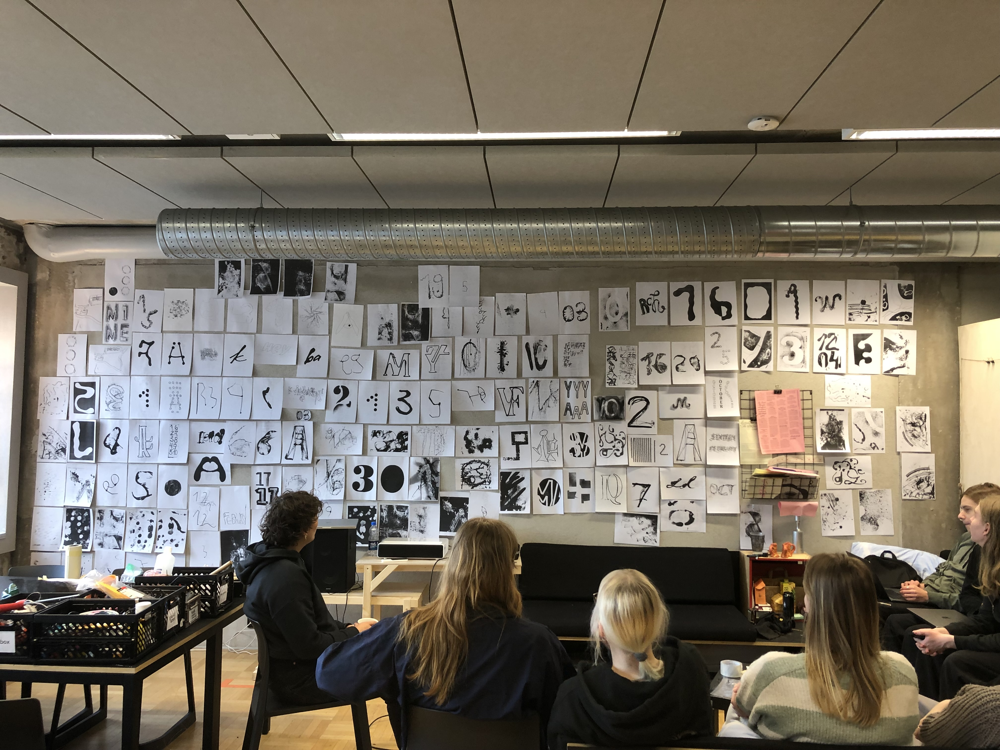

Quer ver, escuta (Want to see, listen)
During 1 week of immersion, in 2020, we created the visual identity of a play for the theater group “Grupo Galpão”, a theater company founded in 1982 in Belo Horizonte, Brazil, which proposes dialogues between poetry and theater. We held a workshop along with the actors, which resulted in 116 hand drawn graphic posters and also directed a photoshoot with the actors, exploring the scenes of the play. *Project in partnership with Filipe Lampejo and João Emediato.


Cabaré Coragem
Visual identity of a play for the theater group “Grupo Galpão”, a theater company founded in 1982 in Belo Horizonte, Brazil, which proposes dialogues between poetry and theater. *Project in partnership with Filipe Lampejo.

A voz a sós
Drawings, lines and letters for the audiovisual project "A voz, a sós" by musician Rafael Macedo, 2022. With voices of Kristoff Silva, Jhê, Leonora Weissmann, Thiago Amud, Ilessi, Luísa Lacerda, Juliana Perdigão and Sérgio Pererê.


Solo em foco
Visual identity of the project "Solo em foco", Belo Horizonte, Brazil 2023.


GIGANTIC HUMAN PRINTING PRESS WORKSHOP
Facilitated by Rita Davis, Oliver Long and Patrick Zavadskis for the graphic design BA students at the Estonian Academy of Arts in March 2023. During one week we explored ideas of printing and constructing collective tools to produce prints. By playing with scale, different materials and objects by the end of the week we had an array of actions that we collectively activated in order to become one machine and produce a range of original oversized prints.

Calendar workshop - EKA GD 2024
Rita and Cecilia Breña worked together with the 1st-year Graphic Design students of EKA @ekagd to create a collective-wearable calendar of 2024. Exploring different techniques and tools—from analog to digital— the students created a collaborative library of graphic elements to use in the making of large scale posters and finally silkscreened T-shirts for each month.


RIBA Poster
A2 foldable poster/postcard for the Royal Institute of British architects RIBA. November, 2021
Heart-shaped bed postcard
Heart-shaped bed postcard for Entropy Gauntlet Motel exhibition by Zoody, Lauri, Joonas and Tex. Tallinn, 2023

Poster for Bricks from the Kiln
Poster for "An Incomplete A to Z of Bricks from the Kiln" lecture by Matthew Stuart and Andrew Walsh-Lister. Presented by the MA in Graphic Design at the Estonian Academy of Arts.


Joints
Joints are meeting points between bones, which ensure the human body's ability to move. Joints is also a 24-page publication which highlights artists and other professionals around the topic of language and prosthetics: as something that extends the body with the intent of becoming part of the whole. At the same time it is aware that it will find itself in limbo between the familiar and the strange: a foreign body inside a body. In three parts, the main characters, accompanied by many others, cross paths through texts and images. Most of them will never meet each other, but in the publication they exist together.
The publication was printed from six wooden plates measuring 50 x 70cm which are displayed in the garden. The content was both laser-cut and hand-carved into the panels using the method of pyrography, and then printed with a printing press.


As if I had fingers at the tip of my words
This book consists of my thesis text and it was launched in December 2022 in the city of Tallinn as part of my graduation project at the Graphic Design MA program at the Estonian Academy of Arts.
The book reflects upon the scientific phenomenon of phantom limb, using it as a metaphor to think about a presence of an absence in relation to graphic design practice. The cover and sections of the publication were printed manually by myself, using a woodcut hand carved into a plywood wall measuring 3,2x2,5m in the hallway of the university in Estonia. Each book contains the cover and 6 original illustrations, printed directly from the wall. The binding was with the sowing machine, using french fold.
Escrever Leonilson (To write Leonilson)
Book about the brazilian artist José Leonilson. Wrote by Marina Baltazar. Designed by Rita Davis. Published by Relicário Edições. Belo Horizonte, Brazil, 2023.

All horses are the same colour
"All horses are the same colour" is a book of student writing conceived during a two-week workshop with artist Lieven Lahaye. It includes texts by Rita Davis, Mark Foss, Alexandra Margetic, Carlo Canún, Michael Fowler, Patrick Zavadskis, Oliver Long, and Greta Þorkelsdóttir.
Published by Estonian Academy of Arts / EKA GD MA, 2022 Design by Carlo Canún and Rita Davis

FEBRE (Fever)
Some images of the visual identity process me and Filipe Lampejo did in early 2022 for a movie by the theater group "Grupo GalpaÃÉo", a theater company founded in 1982 in Belo Horizonte, Brazil.
Visual identity for a movie by the theater group “Grupo Galpão”, a theater company founded in 1982 in Belo Horizonte, Brazil, which proposes dialogues between poetry and theater. The movie FEBRE (Fever) is directed by Márcio Abreu and written by Paulo André. *Project in partnership with Filipe Lampejo.


Moving Couch Cinema
is a series of movies screened in different spots, for different people, on different days, at different times. Curated by Björn Giesecke and Rita Davis. The project is part of DRAMA. DRAMA is a 1.3m2 exhibition space on a grainy wall inside the Estonian Academy of Arts, Tallinn. Initiated within the masters programme in Graphic Design, eka-gd-ma.ee. Taking things from the floor up onto the wall and calling it something, or to be more specific: a once defunct drawer in the hallway, 1.30 x 1 x 0.05 m, now rotated clockwise, lifted 0.9 m from the ground, screwed into the concrete wall, and introduced as an exhibition space called DRAMA.

INFERNINHO (My Own Private Hell)
A1 poster for the screening of the movie ùï¥ùñìùñãùñäùñóùñìùñéùñìùñçùñî (My own private hell) directed by Guto Parente and Pedro DioÃÅgenes (CearaÃÅ, Brazil 2018).

In-between relationships: Initial Thoughts About Being Together
The publication "In-between relationships: Initial Thoughts About Being Together" was launched last semester at Lugemik Bookshop in Tallinn, Estonia. A short essay about relationships, friendship, invisible borders and affection. Reflections about subverting pre-determined ways of relating to each other and what can we encounter in "in-between" spaces. written and designed by me. risoprinted at EKA, 2021.


Karta Manifesto del Amor-Amor en Portunhol Selvagem
This manifesto was made by Brazilian and Paraguayans artists reclaming that “Portunhol” (the mix of spanish and portuguese) should be the oficial language of the border region between countries.
A tutorial video is available here so anyone can print and produce your own brochure at home, using color tapes for binding.

Reward to whoever finds me
My graduation project in my BA at Universidade Federal de Minas Gerais (UFMG) had great importance for my entrance in the publishing market. The book was developed in partnership with my grandmother, a militant from the 60’s against against the Brazilian military dictatorship, who wrote the texts, while I did the editorial design and collages. The book was published in 2018 in Belo Horizonte, Brazil.


Sushi dinner
One of the best days of my semester. Cooking a sushi dinner and sitting on the clouds with the amazing crew @laura.pappa @general_enquiry @carlocanun @oliverlong_ @markjfoss @miam_iam @patrickzavadskis @axiatonal @gretathorkels (and also with the help of the 2nd years). Much love, thanks amigos! photos: @katarina_sarap


"I'm serious, I'm friendly, I'm funny"
is a journal that was produced collectively during the typography workshop with Jung-Lee and Josse Pyl in October 2021. My collaboration to the journal was inspired by the famous phrase by Pina Bausch: Dance, dance, otherwise we are lost. And also based in the performance "Clarabóia" by the brazilian dancer and choreographer Morena Nascimento. From that references, I printed some frames of the performance and scanned to create texture and movement.


Mascorona project
“Mascorona — masks for the new era” is a artistic curatorial project that started at the beginning of the pandemic on Instagram. We started producing homemade masks and challenging our friends to do the same. Currently, we’ve curated more than 230 masks and more than 7 thousand people follow the project (from Brazil and other countries). *in partnership with Filipe Lampejo and João Emediato.